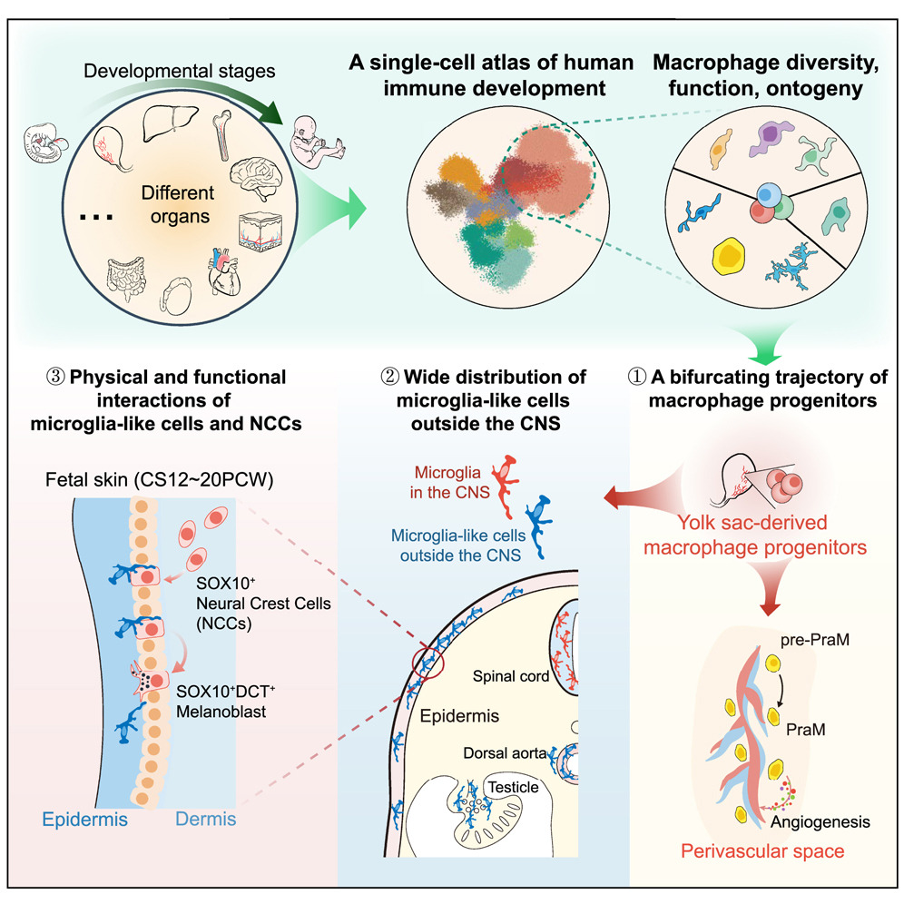
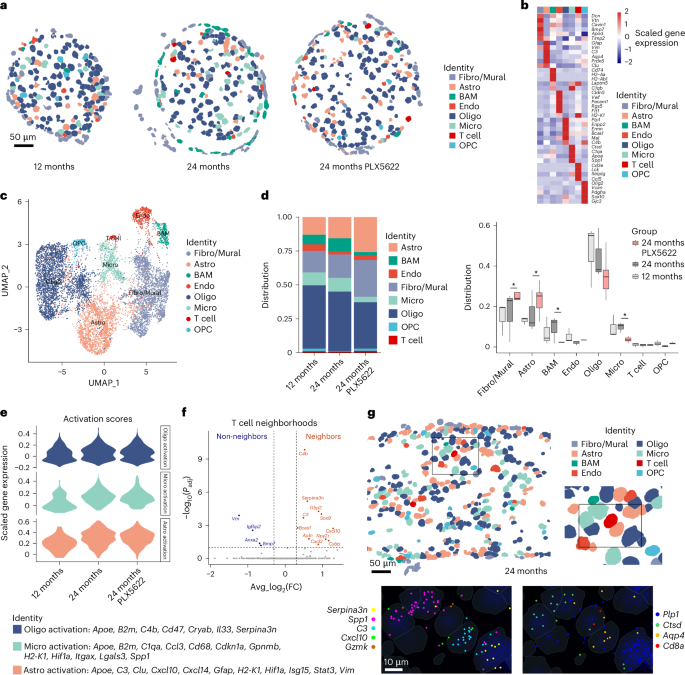
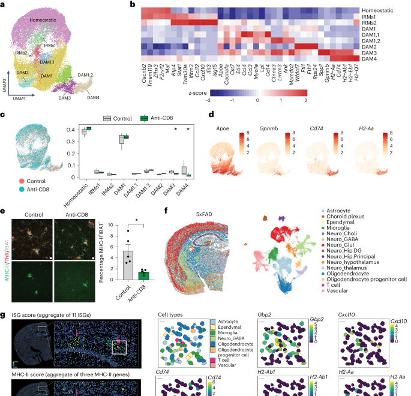
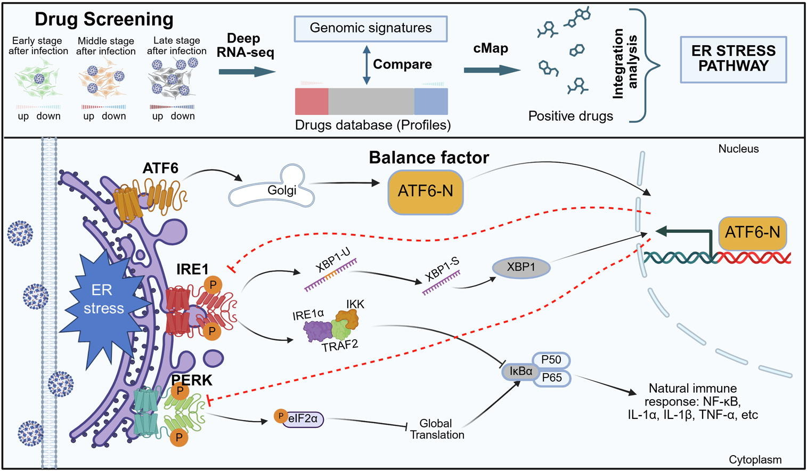
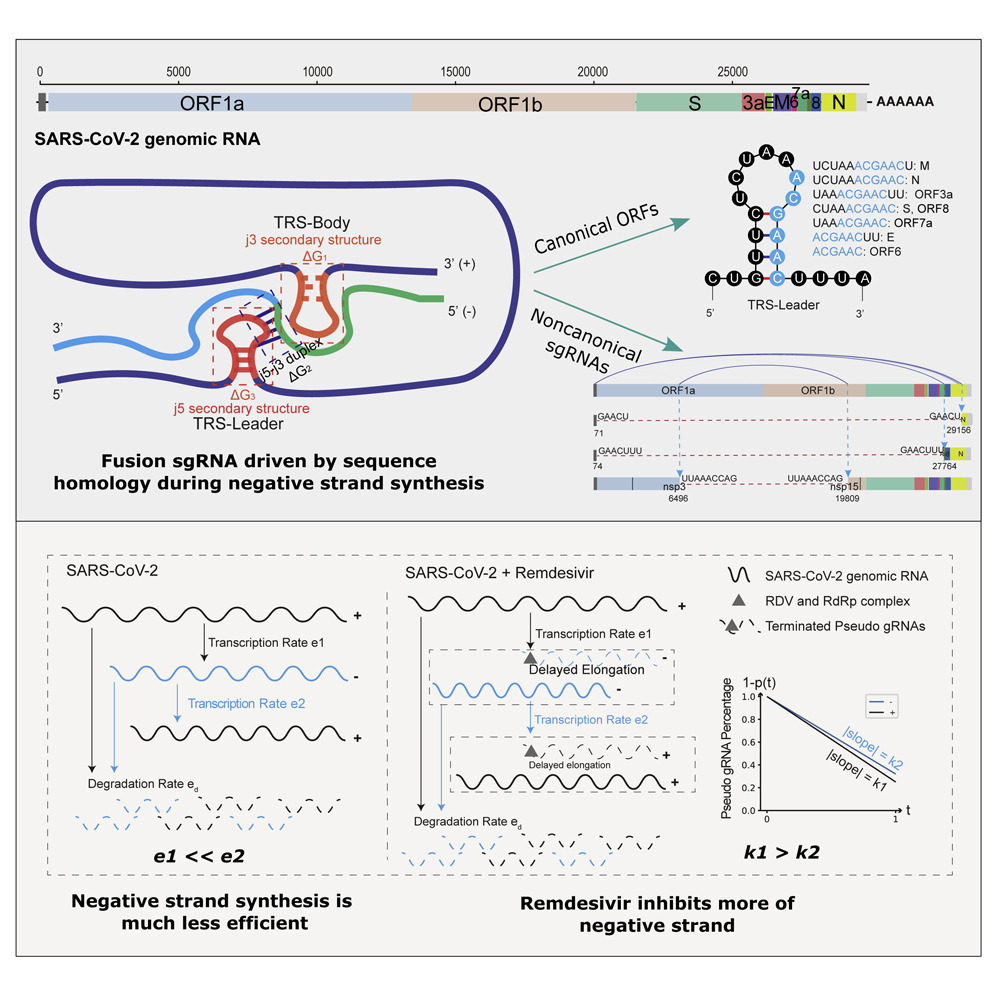

|
Ruoqing Feng I am a computational biologist and PhD student at the German Center for Neurodegenerative Diseases (DZNE; LMU-GSN), working with Prof. Mikael Simons. I study how cellular systems reorganize during aging and neurodegeneration, with a focus on neuroimmune interactions, inflammatory remodeling, and spatially organized disease microenvironments. My work combines single-cell and spatial transcriptomics, multimodal omics integration, and quantitative analysis to connect molecular cell states with tissue context in the aging and diseased brain. |

|
Education
German Center for Neurodegenerative Diseases (DZNE; LMU-GSN)
Shenzhen Institute of Advanced Technology, Chinese Academy of Sciences
Southern University of Science and Technology |
ResearchI am fascinated by how complex tissue microenvironments encode disease through spatial organization, dynamic cell states, and context-dependent interactions. My current work maps inflammatory niches in human multiple sclerosis lesions using snRNA-seq and MERFISH, while my broader interests include immune-cell development, aging-related white matter degeneration, and mechanisms linking T cells, microglia, and myelin pathology. I also enjoy building reproducible analysis frameworks for reference-based annotation, spatial niche analysis, cell-cell communication, trajectory inference, and gene regulatory network analysis. |
Publications |

|
Single-cell spatial transcriptomic profiling defines a pathogenic inflammatory niche in chronic active multiple sclerosis lesions
Ruoqing Feng, Lena Spieth, Lu Liu, Stefan Berghoff, Jonas Franz, Qian Liu, Zhen Wang, Vini Tiwari, Simona Vitale, Simon Frerich, Sergi Florensa, Niklas Junker, Ludwig Huber, Marco Keller, Christoph Müller, Franz Bracher, Xiaoke Ge, Patrick C.N. Rensen, Gijs Kooij, Leon Hosang, Serhii Chornyi, Martin Dichgans, Ozgun Gokce, Gesine Saher, Christine Stadelmann, Martin Giera, Janos Groh, Mikael Simons Immunity, 2025 article / DOI / PubMed A single-cell molecular and spatial atlas of chronic active MS lesions using snRNA-seq and MERFISH. |
|
 |
An immune cell atlas reveals the dynamics of human macrophage specification during prenatal development
Zeshuai Wang*, Zhisheng Wu*, Hao Wang*, Ruoqing Feng*, Guanlin Wang, Muxi Li, Shuang Yin Wang, Xiaoyan Chen, Yiyi Su, Jun Wang, Weiwen Zhang, Yuzhou Bao, Zhenwei Lan, Zhuo Song, Yiheng Wang, Xianyang Luo, Lingyu Zhao, Anli Hou, Shuye Tian, Hongliang Gao, Wenbin Miao, Yingyu Liu, Huilin Wang, Cui Yin, Zhi Liang Ji, Mingqian Feng, Hongkun Liu, Lianghui Diao, Ido Amit, Yun Chen, Yong Zeng, Florent Ginhoux, Xueqing Wu, Yuanfang Zhu, Hanjie Li Cell, 2023 article / DOI A single-cell atlas of prenatal immune development and macrophage specification across human tissues. * Co-first author. |
|
 |
Microglia activation orchestrates CXCL10-mediated CD8+ T cell recruitment to promote aging-related white matter degeneration
Janos Groh, Ruoqing Feng, Xidi Yuan, Lu Liu, Dennis Klein, Gladis Hutahaean, Elisabeth Butz, Zhen Wang, Lisa Steinbrecher, Jonas Neher, Rudolf Martini, Mikael Simons Nature Neuroscience, 2025 DOI A study of microglia-driven immune recruitment and inflammatory programs in aging-related white matter degeneration. |
|
 |
T cell-mediated microglial activation triggers myelin pathology in a mouse model of amyloidosis
Shreeya Kedia, Hao Ji, Ruoqing Feng, Peter Androvic, Lena Spieth, Lu Liu, Jonas Franz, Hanna Zdiarstek, Katrin Perez Anderson, Cem Kaboglu, Qian Liu, Nicola Mattugini, Fatma Cherif, Danilo Prtvar, Ludovico Cantuti-Castelvetri, Arthur Liesz, Martina Schifferer, Christine Stadelmann, Sabina Tahirovic, Ozgun Gokce, Mikael Simons Nature Neuroscience, 2024 DOI A study linking T cell-mediated microglial activation with myelin pathology in amyloidosis. |
|
 |
Transcriptomics-driven antiviral drug screening identifies ATF6 as a homeostatic regulator of ER stress and innate immunity
Zhenyu Yang, Jing Sun, Yan Zhao, Ruoqing Feng, Yanhong Tang, Shijun Bu, Yuan He, Qinan Hu, Jincun Zhao, Yuhui Hu Journal of Advanced Research, 2025 article / DOI A transcriptomics-based antiviral drug screening study identifying ATF6 as a regulator of ER stress, innate immunity, and SARS-CoV-2 replication. |
|
 |
The strand-biased transcription of SARS-CoV-2 and unbalanced inhibition by remdesivir
Yan Zhao, Jing Sun, Yunfei Li, Zhengxuan Li, Yu Xie, Ruoqing Feng, Jincun Zhao, Yuhui Hu iScience, 2021 DOI A transcriptomic analysis of strand-biased SARS-CoV-2 transcription and remdesivir response. |
Selected Presentations
FENS-Hertie Winter School 2025-2026, Flash Talk, 2026
GSN Students' Conference, Presentation, 2026
Brain (epi)genome, Poster, 2026 |
| Last updated: June 5, 2026 |